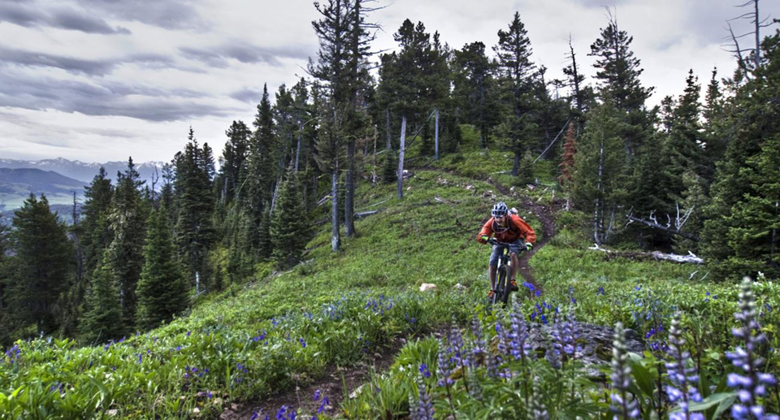
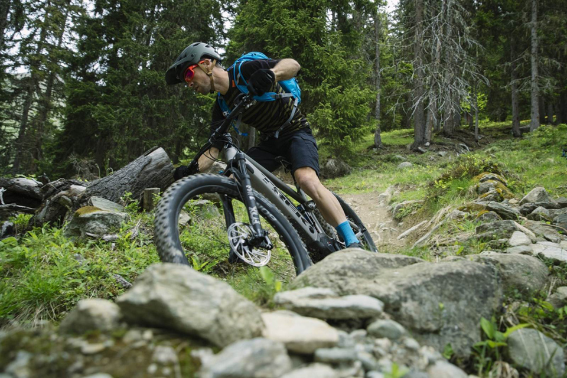

Call to Action!!
Do you love to feel that you are one with nature? Hear the birds in the trees, feel wind blowing through your hair? Do you enjoy fun physical activity that not only tests your bodies abilities, but also keeps your mind active as well? Then now is the time to begin or get back to the thrill of mountain biking! Here at The Mountain Spoke you will find everything you need to help you get moving and inspire you to be the best cyclist you can be.
|  |  |